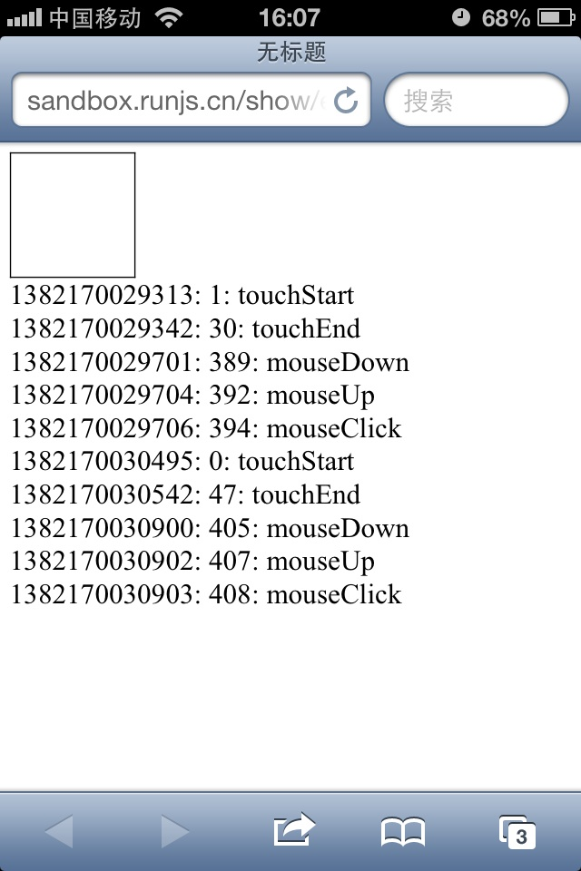
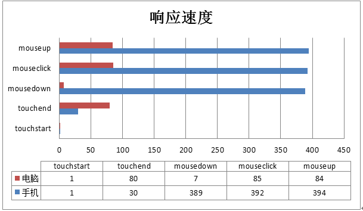

前言
现在一直在做移动端的开发，这次将单页应用的网页内嵌入了app，于是老大反映了一个问题：
app应用点击响应慢！
我开始不以为然，于是拿着网页版的试了试，好像确实有一定延迟，于是开始了研究，最后选择了touch取代鼠标事件
但是，touch事件取代mouse事件，还是有一定问题的，据说网上问题很多，因为两者之间还是有一定差异
而且如果完全使用touch事件，对自动化测试的同事来说，他们的系统根本不支持touch事件，再者我们平时网页开发也不方便
所以，了解鼠标事件与touch事件的区别，探讨鼠标事件与touch事件的兼容也是有必要的，于是我们开始今天的学习吧
PS：这里使用zepto框架，懒得自己搞了......
事件差异
鼠标事件
首先，我们来看看鼠标事件相关吧：
1 var startTime; 2 var log = function (msg) { 3 console.log(new Date().getTime() - startTime); 4 console.log(msg); 5 }; 6 var mouseDown = function () { 7 startTime = new Date().getTime(); 8 log('mouseDown'); 9 }; 10 var mouseClick = function () { 11 log('mouseClick'); 12 }; 13 var mouseUp = function () { 14 log('mouseUp'); 15 }; 16 17 document.addEventListener('mousedown', mouseDown); 18 document.addEventListener('click', mouseClick); 19 document.addEventListener('mouseup', mouseUp);
从这里看到了，鼠标顺序是有mousedown -> click -> mouseup 的顺序，其时间差也出来了
touch事件
然后我们看看touch事件
没有click
touch包含三个事件，touchstart、touchmove、touchend，并没有click事件，所以click事件需要自己模拟，这个我们后面来看看
1 var startTime; 2 var log = function (msg) { 3 console.log(new Date().getTime() - startTime); 4 console.log(msg); 5 }; 6 var touchStart = function () { 7 startTime = new Date().getTime(); 8 log('touchStart'); 9 }; 10 11 var touchEnd = function () { 12 log('touchEnd'); 13 }; 14 15 document.addEventListener('touchstart', touchStart); 16 document.addEventListener('touchend', touchEnd);
在chrome开启touch事件的情况下，可以看到这个结果
混合事件
现在我们在手机上同时触发两者事件看看区别，这里代码做一定修改
1 <!DOCTYPE html PUBLIC "-//W3C//DTD XHTML 1.0 Transitional//EN" "http://www.w3.org/TR/xhtml1/DTD/xhtml1-transitional.dtd"> 2 <html xmlns="http://www.w3.org/1999/xhtml"> 3 <head> 4 <title></title> 5 <script id="others_zepto_10rc1" type="text/javascript" class="library" src="http://sandbox.runjs.cn/js/sandbox/other/zepto.min.js"></script> 6 </head> 7 <body> 8 <div id="d" style="width: 100px; height: 100px; border: 1px solid black;"> 9 </div> 10 </body> 11 <script type="text/javascript"> 12 var startTime; 13 var log = function (msg) { 14 var div = $('<div></div>'); 15 div.html((new Date().getTime()) + ': ' + (new Date().getTime() - startTime) + ': ' + msg) 16 $('body').append(div); 17 18 }; 19 var touchStart = function () { 20 startTime = new Date().getTime(); 21 log('touchStart'); 22 }; 23 var touchEnd = function () { 24 log('touchEnd'); 25 26 }; 27 var mouseDown = function () { 28 log('mouseDown'); 29 }; 30 var mouseClick = function () { 31 log('mouseClick'); 32 }; 33 var mouseUp = function () { 34 log('mouseUp'); 35 36 }; 37 var d = $('#d'); 38 d.bind('mousedown', mouseDown); 39 d.bind('click', mouseClick); 40 d.bind('mouseup', mouseUp); 41 d.bind('touchstart', touchStart); 42 d.bind('touchend', touchEnd); 43 </script> 44 </html>
测试地址
http://sandbox.runjs.cn/show/ey54cgqf
此处手机与电脑有非常大的区别！！！


结论
不要同时给document绑定鼠标与touch事件
document.addEventListener('mousedown', mouseDown);
document.addEventListener('click', mouseClick);
document.addEventListener('mouseup', mouseUp);
document.addEventListener('touchstart', touchStart);
document.addEventListener('touchend', touchEnd);
这个样子，在手机上不会触发click事件，click事件要绑定到具体元素
PS：此处的原因我就不去研究了，如果您知道为什么，请留言
手机上mousedown本来响应就慢
经过测试，电脑上touch与click事件的差距不大，但是手机上，当我们手触碰屏幕时，要过300ms左右才会触发mousedown事件
所以click事件在手机上响应就是慢一拍
数据说明

可以看到，在手机上使用click事件其实对用户体验并不好，所以我们可能会逐步使用touch事件
参数差异
现在，我们来看看鼠标与touch事件的参数差异
1 var startTime; 2 var log = function (msg, e) { 3 console.log(e); 4 var div = $('<div></div>'); 5 div.html((new Date().getTime()) + ': ' + (new Date().getTime() - startTime) + ': ' + msg) 6 $('body').append(div); 7 8 }; 9 var touchStart = function (e) { 10 startTime = new Date().getTime(); 11 log('touchStart', e); 12 }; 13 var touchEnd = function (e) { 14 log('touchEnd', e); 15 16 }; 17 var mouseDown = function (e) { 18 log('mouseDown', e); 19 }; 20 var mouseClick = function (e) { 21 log('mouseClick', e); 22 }; 23 var mouseUp = function (e) { 24 log('mouseUp', e); 25 26 }; 27 var d = $('#d'); 28 d.bind('mousedown', mouseDown); 29 d.bind('click', mouseClick); 30 d.bind('mouseup', mouseUp); 31 d.bind('touchstart', touchStart); 32 d.bind('touchend', touchEnd);
事件参数（touchstart/mouseup）

我们来看几个关键的地方：
changedTouches/touches/targetTouches
touches：为屏幕上所有手指的信息
PS：因为手机屏幕支持多点触屏，所以这里的参数就与手机有所不同
targetTouches：手指在目标区域的手指信息
changedTouches：最近一次触发该事件的手指信息
比如两个手指同时触发事件，2个手指都在区域内，则容量为2，如果是先后离开的的话，就会先触发一次再触发一次，这里的length就是1，只统计最新的
PS：一般changedTouches的length都是1
touchend时，touches与targetTouches信息会被删除，changedTouches保存的最后一次的信息，最好用于计算手指信息
这里要使用哪个数据各位自己看着办吧，我也不是十分清晰（我这里还是使用changedTouches吧）
参数信息(changedTouches[0])
几个重要通用点：
① clientX：在显示区的坐标
② pageX：鼠标在页面上的位置
③ screenX：鼠标在显示屏上的坐标（我是双屏所以x很大）
④ target：当前元素
几个重要不同点：
① layerX：这个是相对距离，这个不同，所以不要用这个东西了
② ......
这个有必要说明下，比如我们改下代码：


1 <!DOCTYPE html PUBLIC "-//W3C//DTD XHTML 1.0 Transitional//EN" "http://www.w3.org/TR/xhtml1/DTD/xhtml1-transitional.dtd"> 2 <html xmlns="http://www.w3.org/1999/xhtml"> 3 <head> 4 <title></title> 5 <script id="others_zepto_10rc1" type="text/javascript" class="library" src="http://sandbox.runjs.cn/js/sandbox/other/zepto.min.js"></script> 6 7 </head> 8 <body> 9 <div style=" position: relative; width: 500px; height: 300px; border: 1px solid black;"> 10 <div id="d" style=" position: absolute; top: 50px; left: 50px; width: 100px; height: 100px; border: 1px solid black;" ></div> 11 </div> 12 </body> 13 14 <script type="text/javascript"> 15 var startTime; 16 var log = function (msg, e) { 17 console.log(e); 18 var div = $('<div></div>'); 19 div.html((new Date().getTime()) + ': ' + (new Date().getTime() - startTime) + ': ' + msg) 20 $('body').append(div); 21 22 }; 23 var touchStart = function (e) { 24 startTime = new Date().getTime(); 25 log('touchStart', e); 26 }; 27 var touchEnd = function (e) { 28 log('touchEnd', e); 29 30 }; 31 var mouseDown = function (e) { 32 log('mouseDown', e); 33 }; 34 var mouseClick = function (e) { 35 log('mouseClick', e); 36 }; 37 var mouseUp = function (e) { 38 log('mouseUp', e); 39 40 }; 41 var d = $('#d'); 42 d.bind('mousedown', mouseDown); 43 d.bind('click', mouseClick); 44 d.bind('mouseup', mouseUp); 45 d.bind('touchstart', touchStart); 46 d.bind('touchend', touchEnd); 47 48 </script> 49 </html>
测试地址
http://sandbox.runjs.cn/show/7tyo48bf
各位自己运行看看差异吧
简单扩展touch事件
touch没有click事件，于是有zepto搞了个tap事件，我们这里先来简单模拟一下，再看源码怎么干的
1 var mouseData = { 2 sTime: 0, 3 eTime: 0, 4 sX: 0, 5 eX: 0, 6 sY: 0, 7 eY: 0 8 }; 9 var log = function (msg) { 10 console.log(msg); 11 }; 12 var touchStart = function (e) { 13 var pos = e.changedTouches[0]; 14 mouseData.sTime = new Date().getTime(); 15 mouseData.sX = pos.pageX; 16 mouseData.sY = pos.pageY; 17 }; 18 var touchMove = function (e) { 19 // var pos = e.changedTouches[0]; 20 // mouseData.eTime = new Date().getTime(); 21 // mouseData.eX = pos.pageX; 22 // mouseData.eY = pos.pageY; 23 e.preventDefault(); 24 return false; 25 }; 26 var touchEnd = function (e) { 27 var pos = e.changedTouches[0]; 28 mouseData.eTime = new Date().getTime(); 29 mouseData.eX = pos.pageX; 30 mouseData.eY = pos.pageY; 31 var data = onTouchEnd(); 32 log(data); 33 var d = $('body'); 34 d.append($('<div>间隔：' + data.timeLag + ', 方向：' + data.dir + '</div>')); 35 }; 36 var onTouchEnd = function () { 37 //时间间隔 38 var timeLag = mouseData.eTime - mouseData.sTime; 39 //移动状态，默认乱移动 40 var dir = 'move'; 41 if (mouseData.sX == mouseData.eX) { 42 if (mouseData.eY - mouseData.sY > 0) dir = 'down'; 43 if (mouseData.eY - mouseData.sY < 0) dir = 'up'; 44 if (mouseData.eY - mouseData.sY == 0) dir = 'tap'; 45 } 46 if (mouseData.sY == mouseData.eY) { 47 if (mouseData.eX - mouseData.sX > 0) dir = 'right'; 48 if (mouseData.eX - mouseData.sX < 0) dir = 'left'; 49 if (mouseData.eX - mouseData.sX == 0) dir = 'tap'; 50 } 51 return { 52 timeLag: timeLag, 53 dir: dir 54 }; 55 }; 56 57 var touchEvents = function (el, func) { 58 el = el || document; 59 func = func || function () { }; 60 el.addEventListener('touchstart', touchStart); 61 el.addEventListener('touchmove', touchMove); 62 el.addEventListener('touchend', touchEnd); 63 }; 64 var d = $('body'); 65 touchEvents(d[0]);
测试地址
http://sandbox.runjs.cn/show/2n9nqssv
这里就可以看到一次touch事件是tap还是up等属性，当然很多时候我们需要设置x方向或者y方向不可拖动，这样就更好呈现
时间间隔长短可以让我们判断自己的拖动是长拖动还是短拖动，长拖动也许用户希望动画慢点，短拖动也许动画就快了
touch事件代码汇总
1 var log = function (msg) { 2 console.log(msg); 3 }; 4 var d = $('body'); 5 6 var touchEvents = function (el, type, func) { 7 this.long = 400; //用于设置长点击阀值 8 this.el = el || document; 9 this.func = func || function () { }; 10 this.type = type || 'tap'; 11 this.mouseData = { 12 sTime: 0, 13 eTime: 0, 14 sX: 0, 15 eX: 0, 16 sY: 0, 17 eY: 0 18 }; 19 this.addEvent(); 20 21 }; 22 touchEvents.prototype = { 23 constructor: touchEvents, 24 addEvent: function () { 25 var scope = this; 26 this.startFn = function (e) { 27 scope.touchStart.call(scope, e); 28 }; 29 this.moveFn = function (e) { 30 scope.touchMove.call(scope, e); 31 }; 32 this.endFn = function (e) { 33 scope.touchEnd.call(scope, e); 34 }; 35 this.el.addEventListener('touchstart', this.startFn); 36 //此处可以换成这样 37 // document.addEventListener('touchmove', this.touchMove); 38 this.el.addEventListener('touchmove', this.moveFn); 39 this.el.addEventListener('touchend', this.endFn); 40 }, 41 removeEvent: function () { 42 this.el.removeEventListener('touchstart', this.touchStart); 43 this.el.removeEventListener('touchmove', this.touchMove); 44 this.el.removeEventListener('touchend', this.touchEnd); 45 }, 46 touchStart: function (e) { 47 var pos = e.changedTouches[0]; 48 this.mouseData.sTime = new Date().getTime(); 49 this.mouseData.sX = pos.pageX; 50 this.mouseData.sY = pos.pageY; 51 }, 52 touchMove: function (e) { 53 e.preventDefault(); 54 return false; 55 }, 56 touchEnd: function (e) { 57 var pos = e.changedTouches[0]; 58 this.mouseData.eTime = new Date().getTime(); 59 this.mouseData.eX = pos.pageX; 60 this.mouseData.eY = pos.pageY; 61 this.onTouchEnd(); 62 }, 63 onTouchEnd: function () { 64 if (this.type == this._getDir()) { 65 66 } 67 }, 68 _getDir: function () { 69 //时间间隔，间隔小于100都认为是快速，大于400的认为是慢速 70 var timeLag = this.mouseData.eTime - this.mouseData.sTime; 71 var dir = 'swipe'; 72 if (timeLag > this.long) dir = 'longSwipe'; 73 if (this.mouseData.sX == this.mouseData.eX && this.mouseData.sY == this.mouseData.eY) { 74 dir = 'tap'; 75 if (timeLag > this.long) dir = 'longTap'; 76 } else { 77 if (Math.abs(this.mouseData.eY - this.mouseData.sY) > Math.abs(this.mouseData.eX - this.mouseData.sX)) { 78 dir = this._getUDDir(dir); 79 } else { 80 dir = 'swipe'; 81 dir = this._getLRDir(dir); 82 } 83 } 84 log(dir); 85 d.append($('<div>间隔：' + timeLag + ', 方向：' + dir + '</div>')); 86 return dir; 87 }, 88 //单独用于计算上下的 89 _getUDDir: function (dir) { 90 if (this.mouseData.eY - this.mouseData.sY > 0) dir += 'Down'; 91 if (this.mouseData.eY - this.mouseData.sY < 0) dir += 'Up'; 92 return dir; 93 }, 94 //计算左右 95 _getLRDir: function (dir) { 96 if (this.mouseData.eX - this.mouseData.sX > 0) dir += 'Right'; 97 if (this.mouseData.eX - this.mouseData.sX < 0) dir += 'Left'; 98 return dir; 99 } 100 }; 101 102 new touchEvents(d[0], 'swipe', function () { 103 // d.append($('<div>间隔：' + data.timeLag + ', 方向：' + data.dir + '</div>')); 104 });
测试地址
{kind=link}
测试时请使用chrome，并且开启touch事件
测试效果
完整可绑定事件代码
1 <!DOCTYPE html PUBLIC "-//W3C//DTD XHTML 1.0 Transitional//EN" "http://www.w3.org/TR/xhtml1/DTD/xhtml1-transitional.dtd"> 2 <html xmlns="http://www.w3.org/1999/xhtml"> 3 <head> 4 <title></title> 5 <meta name="viewport" content="width=device-width, initial-scale=1.0, minimum-scale=1.0, maximum-scale=1.0, user-scalable=no"> 6 <script id="others_zepto_10rc1" type="text/javascript" class="library" src="http://sandbox.runjs.cn/js/sandbox/other/zepto.min.js"></script> 7 </head> 8 <body> 9 <div id="d" style="position: absolute; top: 50px; left: 50px; width: 100px; height: 100px; 10 border: 1px solid black;">滑动我 11 </div> 12 </body> 13 <script type="text/javascript"> 14 var log = function (msg) { 15 console.log(msg); 16 }; 17 var d = $('body'); 18 19 var touchEvents = function (el, type, func) { 20 this.long = 400; //用于设置长点击阀值 21 this.el = el || document; 22 this.func = func || function () { }; 23 this.type = type || 'tap'; 24 this.mouseData = { 25 sTime: 0, 26 eTime: 0, 27 sX: 0, 28 eX: 0, 29 sY: 0, 30 eY: 0 31 }; 32 this.addEvent(); 33 34 }; 35 touchEvents.prototype = { 36 constructor: touchEvents, 37 addEvent: function () { 38 var scope = this; 39 this.startFn = function (e) { 40 scope.touchStart.call(scope, e); 41 }; 42 this.moveFn = function (e) { 43 scope.touchMove.call(scope, e); 44 }; 45 this.endFn = function (e) { 46 scope.touchEnd.call(scope, e); 47 }; 48 this.el.addEventListener('touchstart', this.startFn); 49 //此处可以换成这样 50 // document.addEventListener('touchmove', this.touchMove); 51 this.el.addEventListener('touchmove', this.moveFn); 52 this.el.addEventListener('touchend', this.endFn); 53 }, 54 removeEvent: function () { 55 this.el.removeEventListener('touchstart', this.touchStart); 56 this.el.removeEventListener('touchmove', this.touchMove); 57 this.el.removeEventListener('touchend', this.touchEnd); 58 }, 59 touchStart: function (e) { 60 var pos = e.changedTouches[0]; 61 this.mouseData.sTime = new Date().getTime(); 62 this.mouseData.sX = pos.pageX; 63 this.mouseData.sY = pos.pageY; 64 }, 65 touchMove: function (e) { 66 e.preventDefault(); 67 return false; 68 }, 69 touchEnd: function (e) { 70 var pos = e.changedTouches[0]; 71 this.mouseData.eTime = new Date().getTime(); 72 this.mouseData.eX = pos.pageX; 73 this.mouseData.eY = pos.pageY; 74 this.onTouchEnd(e); 75 }, 76 onTouchEnd: function (e) { 77 if (this.type == this._getDir()) { 78 this.func(e, this); 79 } 80 }, 81 _getDir: function () { 82 //时间间隔，间隔小于100都认为是快速，大于400的认为是慢速 83 var timeLag = this.mouseData.eTime - this.mouseData.sTime; 84 var dir = 'swipe'; 85 if (timeLag > this.long) dir = 'longSwipe'; 86 if (this.mouseData.sX == this.mouseData.eX && this.mouseData.sY == this.mouseData.eY) { 87 dir = 'tap'; 88 if (timeLag > this.long) dir = 'longTap'; 89 } else { 90 if (Math.abs(this.mouseData.eY - this.mouseData.sY) > Math.abs(this.mouseData.eX - this.mouseData.sX)) { 91 dir = this._getUDDir(dir); 92 } else { 93 dir = this._getLRDir(dir); 94 } 95 } 96 log(dir); 97 d.append($('<div>间隔：' + timeLag + ', 方向：' + dir + '</div>')); 98 return dir; 99 }, 100 //单独用于计算上下的 101 _getUDDir: function (dir) { 102 if (this.mouseData.eY - this.mouseData.sY > 0) dir += 'Down'; 103 if (this.mouseData.eY - this.mouseData.sY < 0) dir += 'Up'; 104 return dir; 105 }, 106 //计算左右 107 _getLRDir: function (dir) { 108 if (this.mouseData.eX - this.mouseData.sX > 0) dir += 'Right'; 109 if (this.mouseData.eX - this.mouseData.sX < 0) dir += 'Left'; 110 return dir; 111 } 112 }; 113 114 new touchEvents(d[0], 'tap', function (e) { 115 log(arguments); 116 }); 117 118 </script> 119 </html>
这个代码基本可用了，但是使用上不是很方便，我们这里就不关注了，下面我们来看看zepto的代码和兼容问题
zepto的touch与兼容
先上zepto源码，一看就知道我写的有多不行啦！
1 (function ($) { 2 var touch = {}, 3 touchTimeout, tapTimeout, swipeTimeout, 4 longTapDelay = 750, longTapTimeout 5 6 function parentIfText(node) { 7 return 'tagName' in node ? node : node.parentNode 8 } 9 10 function swipeDirection(x1, x2, y1, y2) { 11 var xDelta = Math.abs(x1 - x2), yDelta = Math.abs(y1 - y2) 12 return xDelta >= yDelta ? (x1 - x2 > 0 ? 'Left' : 'Right') : (y1 - y2 > 0 ? 'Up' : 'Down') 13 } 14 15 function longTap() { 16 longTapTimeout = null 17 if (touch.last) { 18 touch.el.trigger('longTap') 19 touch = {} 20 } 21 } 22 23 function cancelLongTap() { 24 if (longTapTimeout) clearTimeout(longTapTimeout) 25 longTapTimeout = null 26 } 27 28 function cancelAll() { 29 if (touchTimeout) clearTimeout(touchTimeout) 30 if (tapTimeout) clearTimeout(tapTimeout) 31 if (swipeTimeout) clearTimeout(swipeTimeout) 32 if (longTapTimeout) clearTimeout(longTapTimeout) 33 touchTimeout = tapTimeout = swipeTimeout = longTapTimeout = null 34 touch = {} 35 } 36 37 $(document).ready(function () { 38 var now, delta 39 40 $(document.body) 41 .bind('touchstart', function (e) { 42 now = Date.now() 43 delta = now - (touch.last || now) 44 touch.el = $(parentIfText(e.touches[0].target)) 45 touchTimeout && clearTimeout(touchTimeout) 46 touch.x1 = e.touches[0].pageX 47 touch.y1 = e.touches[0].pageY 48 if (delta > 0 && delta <= 250) touch.isDoubleTap = true 49 touch.last = now 50 longTapTimeout = setTimeout(longTap, longTapDelay) 51 }) 52 .bind('touchmove', function (e) { 53 cancelLongTap() 54 touch.x2 = e.touches[0].pageX 55 touch.y2 = e.touches[0].pageY 56 if (Math.abs(touch.x1 - touch.x2) > 10) 57 e.preventDefault() 58 }) 59 .bind('touchend', function (e) { 60 cancelLongTap() 61 62 // swipe 63 if ((touch.x2 && Math.abs(touch.x1 - touch.x2) > 30) || 64 (touch.y2 && Math.abs(touch.y1 - touch.y2) > 30)) 65 66 swipeTimeout = setTimeout(function () { 67 touch.el.trigger('swipe') 68 touch.el.trigger('swipe' + (swipeDirection(touch.x1, touch.x2, touch.y1, touch.y2))) 69 touch = {} 70 }, 0) 71 72 // normal tap 73 else if ('last' in touch) 74 75 // delay by one tick so we can cancel the 'tap' event if 'scroll' fires 76 // ('tap' fires before 'scroll') 77 tapTimeout = setTimeout(function () { 78 79 // trigger universal 'tap' with the option to cancelTouch() 80 // (cancelTouch cancels processing of single vs double taps for faster 'tap' response) 81 var event = $.Event('tap') 82 event.cancelTouch = cancelAll 83 touch.el.trigger(event) 84 85 // trigger double tap immediately 86 if (touch.isDoubleTap) { 87 touch.el.trigger('doubleTap') 88 touch = {} 89 } 90 91 // trigger single tap after 250ms of inactivity 92 else { 93 touchTimeout = setTimeout(function () { 94 touchTimeout = null 95 touch.el.trigger('singleTap') 96 touch = {} 97 }, 250) 98 } 99 100 }, 0) 101 102 }) 103 .bind('touchcancel', cancelAll) 104 105 $(window).bind('scroll', cancelAll) 106 }) 107 108 ; ['swipe', 'swipeLeft', 'swipeRight', 'swipeUp', 'swipeDown', 'doubleTap', 'tap', 'singleTap', 'longTap'].forEach(function (m) { 109 $.fn[m] = function (callback) { return this.bind(m, callback) } 110 }) 111 })(Zepto)
touch对象与上面mouseData功效相同，记录一些属性
delta 用于记录两次点击的间隔，间隔短就是双击
swipeDirection 函数与_getDir _getUDDir _getLRDir 功能相似，只不过代码更为简练，并且真正的私有化了
63行代码开始，若是代码移动过便是划屏，否则就是点击，这点我也没考虑到
73行，否则就应该是点击，这里并且判断是否存在结束时间，代码比较健壮，做了双击或者快速点击的判断
开始兼容
zepto代码我自然没有资格去评说，现在我们来看看他的兼容问题
PS：我这里很水，不太敢动源码，就加一个tap判断，因为也只是用了这个，具体大动手脚的事情，我们后面再做
这样做事因为，我们的项目主要是把click改成了tap事件，导致页面很多功能不可用
1 ['swipe', 'swipeLeft', 'swipeRight', 'swipeUp', 'swipeDown', 'doubleTap', 'tap', 'singleTap', 'longTap'].forEach(function (m) { 2 //兼容性方案处理，以及后期资源清理，如果为假时候，就触发点击事件 3 var isTouch = 'ontouchstart' in document.documentElement; 4 if(m === 'tap' && isTouch === false) { 5 $.fn[m] = function (callback) { return this.bind('click', callback) } 6 } else { 7 $.fn[m] = function (callback) { return this.bind(m, callback) } 8 } 9 })
我就干了这么一点点事情......
待续
今天耗时过长，暂时到这里，对鼠标等操作，对event参数的兼容我们后面点再看看